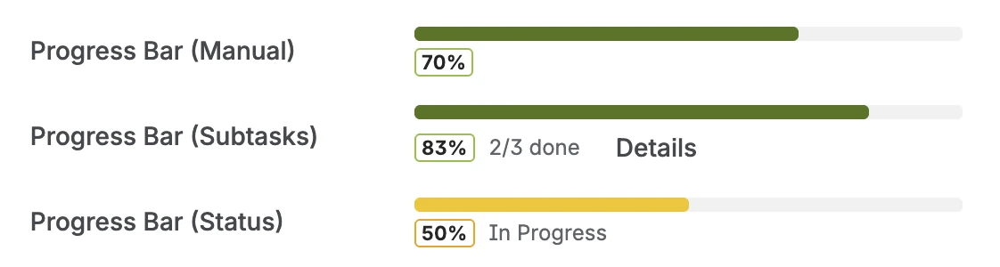
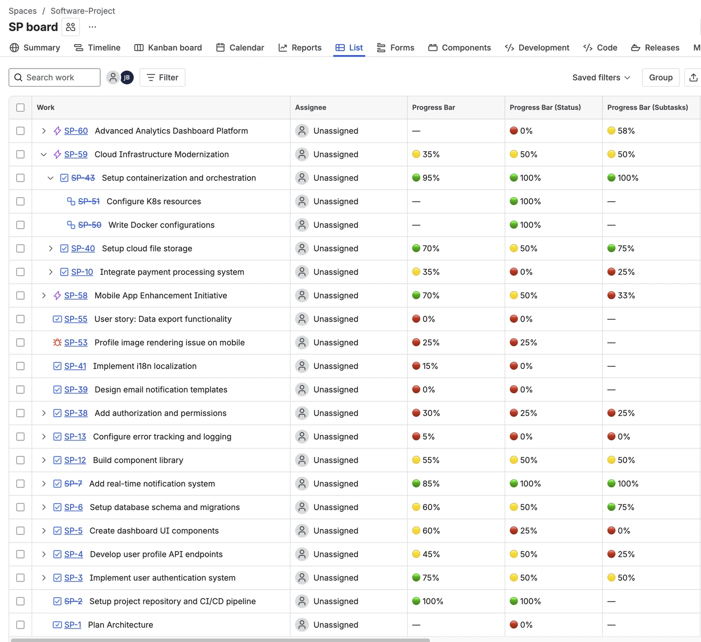

Why no-code matters for Jira progress tracking
Jira is a powerful tool, but it comes with a reputation: "to do anything interesting, you need a Jira admin." Progress tracking often falls into this trap. The DIY approach — create a Number custom field, write an Automation rule that updates it when subtasks transition, test edge cases, maintain it when your workflow changes — can easily become a part-time job.
The result is that most teams either live with Jira's basic Epic progress indicator (which only works at the Epic level) or they skip progress tracking entirely and rely on verbal status updates in standups. Neither is scalable.
No-code progress tracking means: install an app, add a field to your project screen, done. The bar calculates itself from your existing subtasks. No rules to write. No formulas to maintain. No admin expertise required.
Quick answer: Install Visual Progress Tracker for Jira from the Atlassian Marketplace. Add the field to your screen. Progress bars appear automatically on every issue that has subtasks — calculated from subtask status, with no further configuration needed.
Three no-code progress field types
Visual Progress Tracker offers three modes — you pick the one that fits how your team works. All three are configured through a UI, not through code.
The subtask-based mode is the most valuable for most teams — because it requires zero ongoing discipline. The bar just works. Team members do what they already do (transition subtask statuses), and the progress updates itself.
Setup in under 2 minutes
-
1Install Visual Progress Tracker from the Atlassian Marketplace. Search "Visual Progress Tracker" in Marketplace and install to your Jira Cloud site. The free trial gives you full access.
-
2Add the Progress field to your project screen. Go to Jira Settings → Work Items → Screens, find the screen for your project, and add the "Progress" field from Visual Progress Tracker. This is the only admin step required — and it's three clicks.
-
3Choose your tracking mode. In the app settings, select Status-based, Subtask-based, or Manual for each project. If you're unsure, start with Subtask-based — it requires the least ongoing effort from your team.
-
4Open any issue with subtasks. The progress bar appears immediately — color-coded green/yellow/red based on the percentage. In the list view, you'll see the bar in the column alongside your other fields.

Progress bar on a Jira issue — green/yellow/red, automatically calculated from subtask status
Progress in the Jira list view
The real power of no-code progress tracking appears when you add the Progress field as a column in your project's list view. Instead of opening each issue individually to check the bar, you see the color-coded percentage for every issue at a glance — in the same view as issue key, summary, assignee, and sprint.
This turns a list of issues into a progress dashboard without any extra configuration. At a sprint planning meeting, sort by progress ascending to see which issues are furthest behind. In a daily standup, the list view shows at a glance what's red without anyone having to open a ticket.

Progress column in the Jira list view — color-coded bars for every issue, no clicks required to check status
Epic progress tracking without extra setup
When you add the Progress field to Epics as well as Stories, you get epic-level progress calculated from child story completion — without any additional configuration. An epic with 4 of 8 stories done shows 50%. As stories close, the epic bar updates automatically.
This replaces the native Epic progress indicator (which shows raw counts like "4/8 stories") with a visual percentage that's immediately readable at a glance. For a deeper look at epic tracking approaches, see Tracking Epic Progress in Jira: The Subtask Approach.
Sprint progress in the dashboard
Visual Progress Tracker also includes a dashboard gadget that shows the overall progress of the current sprint — a summary bar across all issues, with a breakdown by status category. No-code setup: add the gadget to any Jira dashboard, select your board, and the sprint overview appears.
For a full guide to sprint-level visibility, see How to Build a Sprint Health Dashboard in Jira.
No-code vs. scripting: what you give up
There are things scripting-based progress tracking can do that no-code can't. If you need progress calculated from story points (weighted by points, not issue count), or from custom field values that aren't standard Jira fields, scripting gives you more flexibility.
For the vast majority of teams, issue count is a perfectly adequate proxy. "3 of 5 subtasks done" is meaningful and accurate. The no-code approach works immediately and stays working as the team grows. See the full comparison in Jira Progress Tracking Without Scripting or Complex Custom Fields.
Bottom line: If you're spending more than 10 minutes setting up progress tracking in Jira, you're overcomplicating it. Install Visual Progress Tracker, add the field to your screen, choose subtask-based mode, and move on to shipping product.
Frequently asked questions
How do I add a progress bar to Jira without scripting?
Install Visual Progress Tracker for Jira from the Atlassian Marketplace. Add the custom field to your project screen. The bar appears automatically on issues with subtasks — calculated from subtask status. No JQL, no ScriptRunner, no Automation rules needed.
Does Jira have no-code progress tracking?
Jira Cloud includes basic burndown charts and an Epic progress indicator. For a visual percentage bar on individual issues — updated automatically as subtasks complete — a Marketplace app is needed. Visual Progress Tracker for Jira is a no-code option: zero configuration beyond installing and adding the field to your screen.
What is the difference between manual and automatic progress tracking in Jira?
Manual tracking uses a Number field that team members update themselves — requires discipline, tends to fall out of date. Automatic tracking calculates progress from existing Jira data (subtask statuses or issue status transitions). Automatic is always preferred because it requires zero team discipline to maintain.
Is Visual Progress Tracker for Jira safe for enterprise use?
Yes. Visual Progress Tracker is an Atlassian Forge app — it runs entirely within Atlassian's own infrastructure ("Runs on Atlassian" badge). No data passes through external servers. For enterprise teams with data residency or compliance requirements, see Forge vs. Connect: Which Is More Secure?
Add progress bars to every Jira issue — in 2 minutes
Visual Progress Tracker for Jira — automatic subtask-based progress bars, list view column, sprint dashboard gadget. Forge-native. Free trial included.
Try it free on Marketplace →